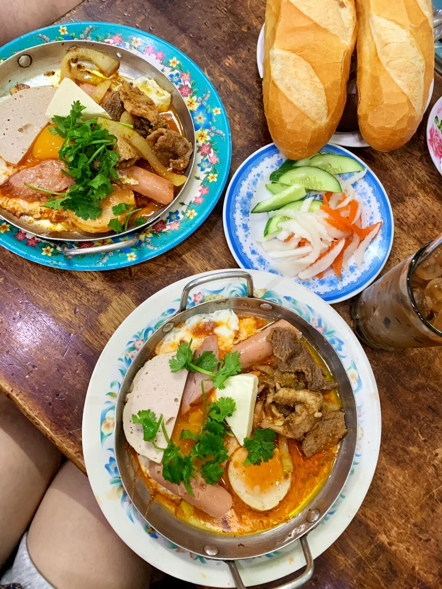
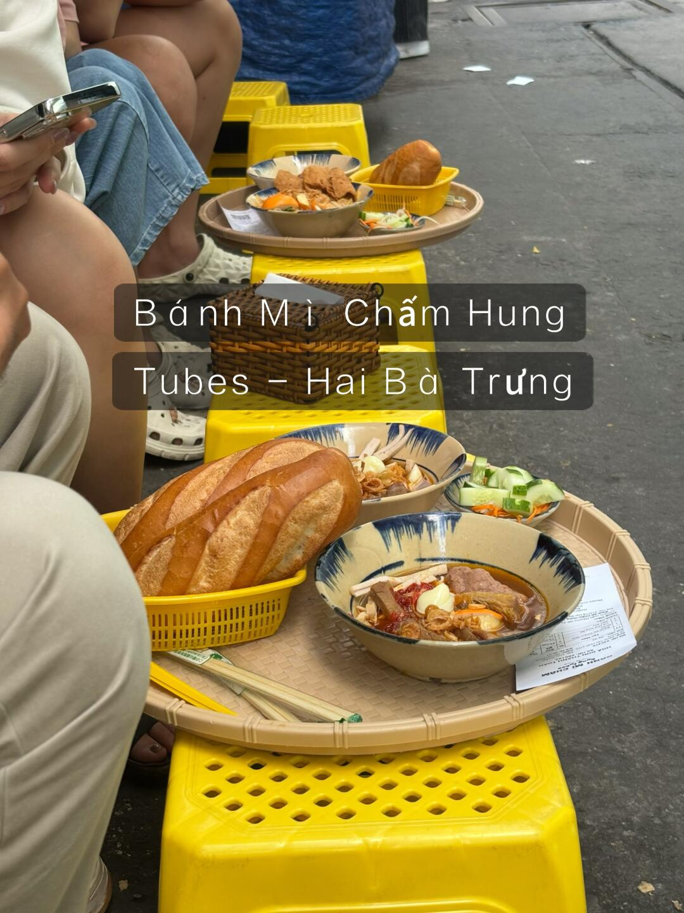
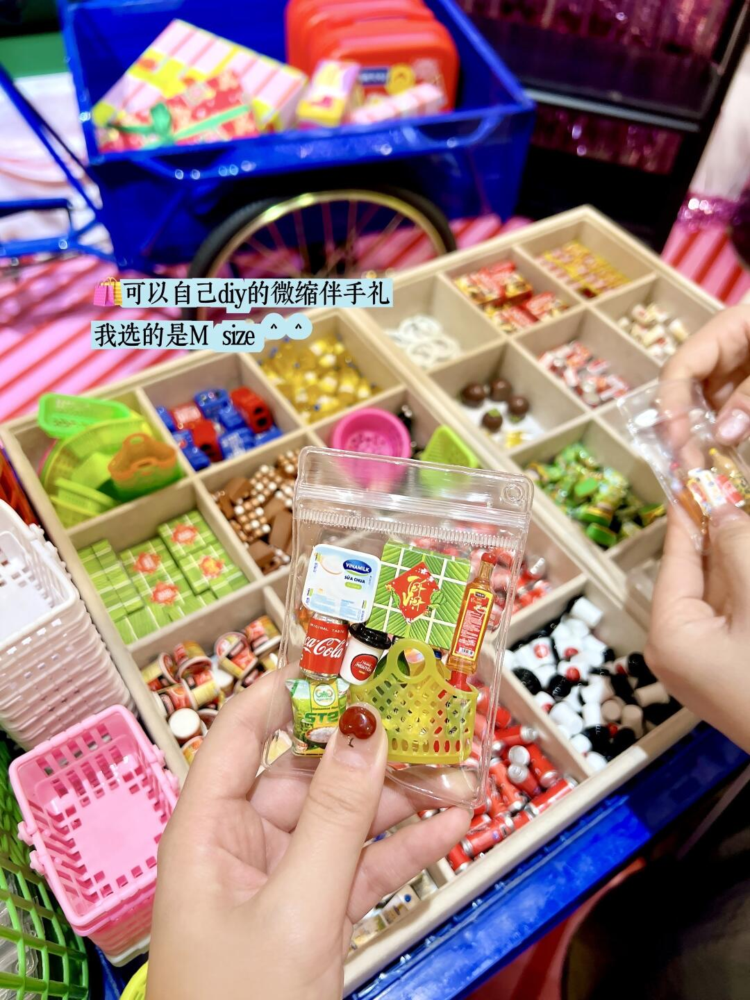
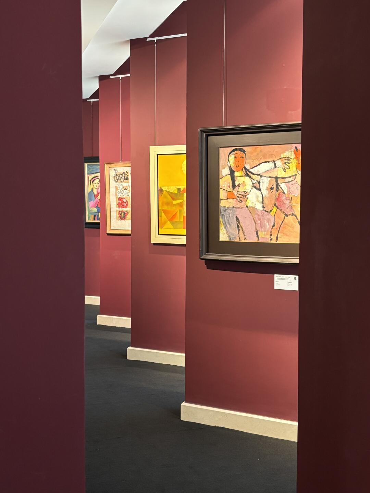

12:00–14:00
抵達、寄放行李・Bánh Mì Chảo – Bếp Nhà Thơm
午餐吃越式鐵板麵包（鐵板現煎，配法國麵包沾醬）。週一 07:00–13:00、16:00–18:30；10/26 是週一，若抵達延誤可改傍晚吃。
Google Maps ↗
以 Gò Vấp 的 Centoria Hotel 為據點，走訪老城建築、粉紅教堂、文青小店與藝術空間。這份是旅途中可直接使用的時間軸：已決定的安排優先，彈性項目依當天體力與交通調整。
第一天以酒店周邊為主，晚上視體力加碼市中心。
午餐吃越式鐵板麵包（鐵板現煎，配法國麵包沾醬）。週一 07:00–13:00、16:00–18:30；10/26 是週一，若抵達延誤可改傍晚吃。
Google Maps ↗
若不累，Grab 去第一郡日本街，逛 Lê Thánh Tôn 小巷，再到 7 Bridges Taproom；喝酒後 Grab 回酒店。
Google Maps ↗市中心經典景點，晚上的兩個選項不必強求都去。
315/18 Hai Bà Trưng——從 Quán Châu Ký 沿同一條街走 5–10 分鐘就到。法國麵包蘸豬肉鴨血湯，路邊攤黃色塑膠凳，本地人早午餐。招牌是 BÁNH MÌ CHẤM QUY NHƠN（歸仁麵包浸湯）；吃完走 2 分鐘就是粉紅教堂。營業 06:30–21:00。

文青小店與藝術館的一天；水上巴士依班次決定。
Xuân Thủy 一帶逛咖啡館、手作小飾品及獨立選物；Haru Object、CHILLALA 等是候選。午餐隨街區安排。
🛍️ 必逛：Vesta Lifestyle & Gifts（34 Ngô Quang Huy，另有 33a Đ. Thảo Điền）——微縮模型伴手禮可以自己挑一袋（M size，每件約 70–80k 盾），二樓有整面牆的明信片與文具。逛完留半天時間不嫌多。


私人當代藝術館，四層（B1 臨時展）、有花園緊鄰西貢河。週二–週日 09:00–16:30，週一休；門票 200,000 盾（學生／藝術家 100,000）。預留 1.5–2 小時。
Google Maps ↗
最後一個完整旅遊日，下午逛濱城市場，晚餐後完成超市採購再回酒店。
早班機返程，不排景點。